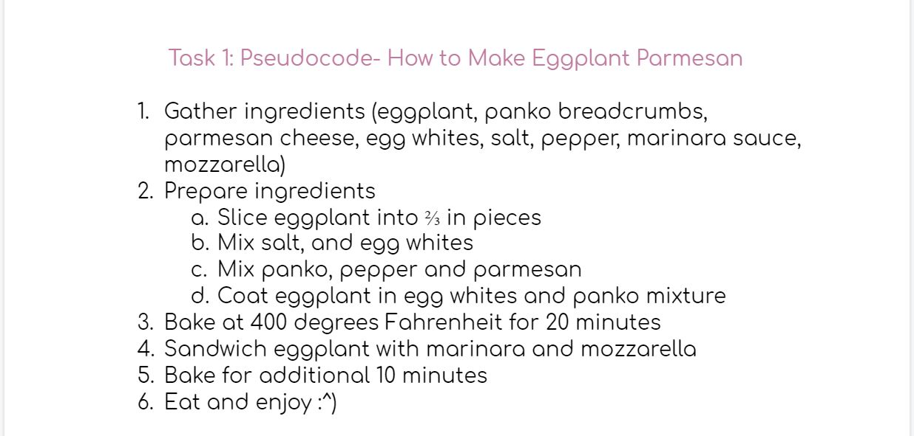
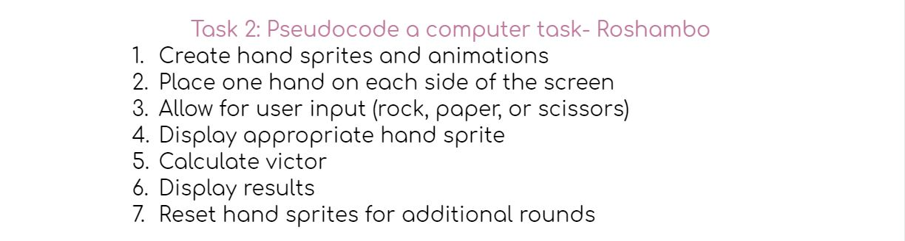

This lab asked us to develop a pseudocode for an everyday task and translate this skill into pseudocoding a javascript comments. Me and my partner chose to translate the steps for baking eggplant parmesan and playing virtual Roshambo into pseudocode.
Me and my partner did not run into any problems in the process of this lab, although the javascript format was unfamiliar to the two of us.
First, we wrote out the steps to make a tasty eggplant parmesan dish.
Next, we wrote the pseudocode for playing a virtual game of Roshambo.
Finally, we translated the pseudocode we developed for Roshambo into Javascript language, as displayed below.
// Create hand sprites and animations
// Place one hand on each side of the screen
// Allow for user input (rock, paper, or scissors)
// Display appropriate hand sprite
// Calculate victor
// Display results
// Reset hand sprites for additional rounds